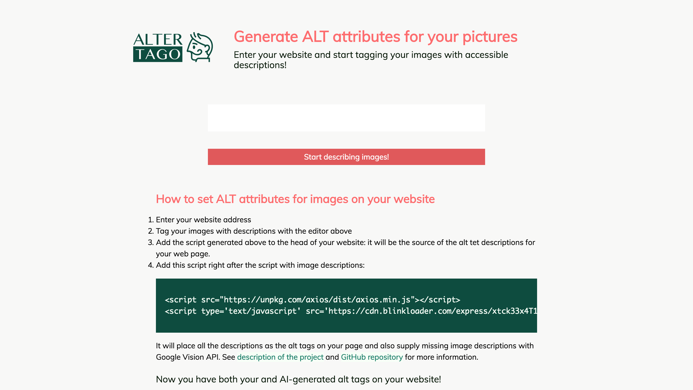
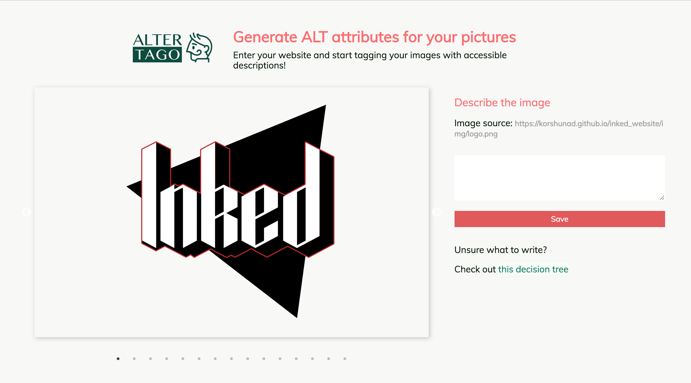
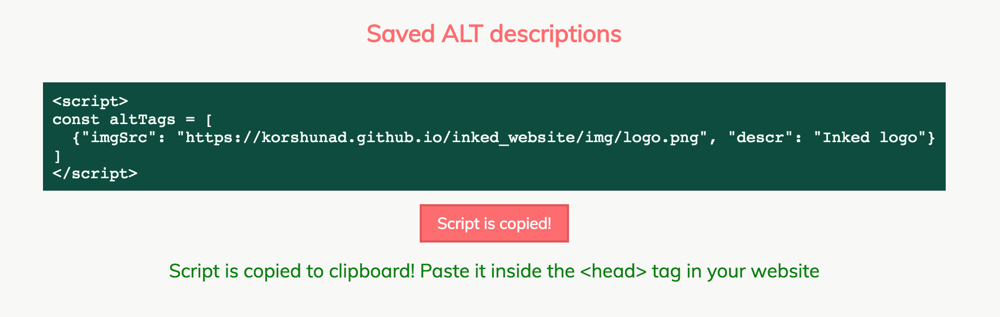

AlterTago
Developing a system of manual and automatic alt attributes generation
Context
AlterTago is a productivity tool that I created for web masters, who care about SEO and accessability of their websites. AlterTago collects images from the target link and lets you add description to each of them. As a result you get a magical code snippet, that adds alt tags where needed.
Overview
The goal of the project was to create the proof of concept for a script a and visual app that would help with adding ALT attributes to images on the webpages. The development goals for this project were the following:
-
Write the client-side script, that
- gathers the images from the whole page
- checks if the alt attributes are present, and if not
- attaches the alt descriptions from provided Javascript object
- sends request to the API to get automatically generated image description
-
Prepare API on the backend, that
- sends request to the Google Vision API to get AI-generated image descriptions
- parses the provided webpage and get all the images (for the visual editor app)
-
Create the visual editor app, AlterTago website, that
- requests the website with the images
- displays the images and allows to add descriptions to them
- generates the script with alt descriptions information
- provides information how to use the client-side script to generate alt tags on the page on page load
At the last development stage I also had to circle back and fix the initial client-side script.
Writing ALT attributes creating script on client-side
Problem
At first I had to write the script, that on page load checks existing alt attributes and attaches new ones.
Solution
In tackling the problem, I have chosen the more convenient structure of the Javascript object holding images' urls and descriptions, tested the script on multiple website and integrated the response from the backend API, transforming it from array with keywords to a string.
const altTags = [
{
imgSrc: "https://example.com/some_pic.png",
descr: "cute dog on a sunny valley"
}
];
const getImages = () => {
const images = document.getElementsByTagName('img');
for(let i = 0; i < images.length; i++) {
const imgInfo = altTags.filter(tag => tag.imgSrc == images[i].src)[0];
if (!images[i].alt && altTags && imgInfo.descr) {
images[i].alt = imgInfo.descr;
} else if (!images[i].alt && altTags && !imgInfo.descr) {
axios.get('/get-alt', {
params: {
src: encodeURIComponent(images[i].src)
}
})
.then(function (response) {
if (response.data.length > 1) {
images[i].alt=response.data.join(', ');
} else if (response.data.length == 1) {
images[i].alt=response.data[0];
} else {
images[i].alt="";
}
})
.catch(function () {
images[i].alt="";
});
}
}
}
document.addEventListener('DOMContentLoaded', getImages, false);
Preparing backend API
The backend API contains two requests: getting images from the website and getting descriptions for each image per request.
Using Google Vision API
First set of problems and solutions was related to the usage of the Google Vision API.
I had to restrict the usage, as it has limited amount of free API calls. For that I used the
express-rate-limitAlso in the process of testing the API I found the problem that not all links to the images can be parsed by Google Vision APi, and you have to create the base64 encoding of the image. After some time figuring out documention and other programmers use cases, I decided to use the
image-to-base64Another issue was related to the usage of the API itself, as it is not perfect for the moment and sometimes returns unreliable results. After some testing I decided to limit the labels returns to those which are 90% topical, and in case there no such labels, just return those that were returned at all.
Parsing web pages for images
As it turned out for me, it is quite easy to parse web pages with Node.js and extract relevant html tags, such as images. However, I needed to ensure that dynamic websites can be scraped as well, and those don't have most of the content at the moment of scraping.
After some research I decided to use puppeter to open headless chrome instance and get website content with it. Then to extract the actual images I had to use the cheerio package.
Having successfully tested online, I stumbled upon a problem of using puppeteer when the API was deployed onto Heroku platform. The API was failing until I found out that puppeteer setup should use the following parameters:
puppeteer
.launch({
headless: true,
args: [
'--no-sandbox',
'--disable-setuid-sandbox',
'--disable-dev-shm-usage',
'--single-process'
]
})
and, even more importantly, use puppeteer-heroku-buildpack, installing missing dependencies for puppeteer to run on heroku
$ heroku buildpacks:add https://github.com/jontewks/puppeteer-heroku-buildpack
Creating visual editor app
Creating React.js components and managing app state
Interesting problems in this section, aside from figuring out design, layout and user experience, were to edit each image with the same form while looping through the images with slider and generate the script copying field.
For the images editing, as the images were wrapped into an external Slider component, I had to extract the current slide number from there and provide it to the rest of the app to save specific description of the image into an object with it source.
So I used
beforeChange: (current, next) => {
this.setState({ oldSlide: current, activeSlide: next})
},
in the Slider settings and used the activeSlide to control the proper altTags object creation:
altTags.push({
imgSrc: images[activeSlide],
descr: currentImgLabel
});
For the script to be copied I ended up using the template string:
{`<script>
const altTags = [${altTags.map(tag => `\n {"imgSrc": "${tag.imgSrc}", "descr": "${tag.descr}"}`)}
]
</script>`}
To generate the following output:
<script>
const altTags = [
{"imgSrc": "https://korshunad.github.io/AlterTago/altertago_logo.bd3a74ce.svg", "descr": "Alter Tago logo"}
]
</script>
that can be later copied and inserted into HTML page.
Planning empty, loading, success states for the app
Also, as there is a GET request, I had to plan the empty, loading and having data states for the app. Empty state is empty form with basic information on the webpage, then animated logo replaces it when data is loading and then is further replaced with images slider when data arrives:
Step one: form
Step two: loader
Step three: image slider with the form
Step four: script tag and a link anchor to it appear when at least one description is saved
Step five: script tag is copied
Packaging and deploying the project
As I was packaging the project with Parcel, the generated static website was in the dist folder and I had to anticipate it when deploying the website with gh-pages, which usually just takes the index.html from the root folder as the entry point.
The solution was to push a git subtree to the gh-pages with the following script, saved in package.json scripts to reuse later:
"gh-publish": "git subtree push --prefix dist origin gh-pages"Overall result
The proof of concept for automatic ALT attributes generation app.